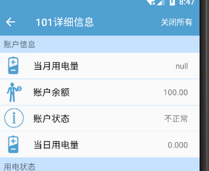
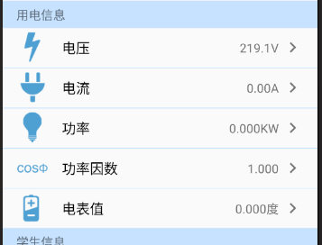
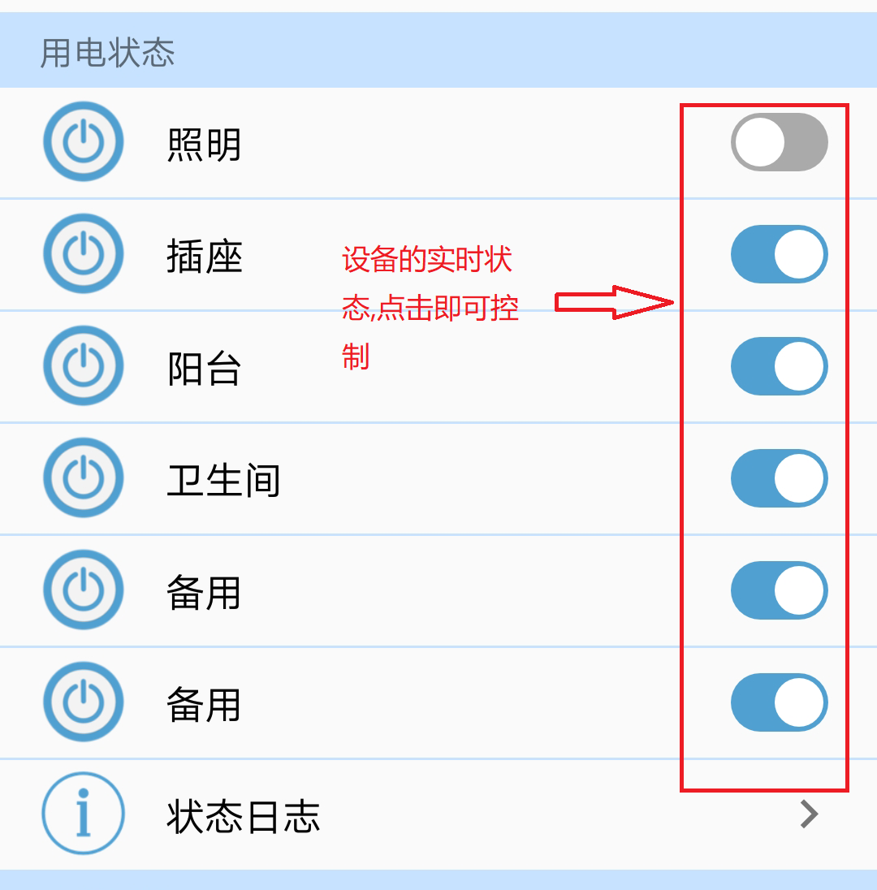
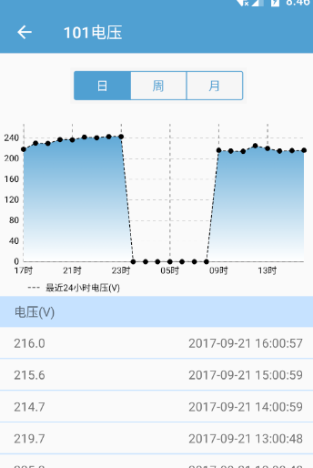

App使用指南
1.远程监视寝室用电情况
1.1查看用电信息
通过学生公寓能管app,在主页上,您可以实时查看寝室的用电情况，包括用电量、电压、电流、功率、能耗等信息和寝室照明、插座的打开或关闭状态
 
1.2远程控制寝室设备
通过学生公寓能管app,在主页上,您可以远程通过控制按钮来控制寝室的设备。入下图按钮。

2.智能分析寝室用电
2.1查看用电历史信息
通过学生公寓能管app,您可以查看用电量、功率、因素的历史信息，掌握寝室能耗，合理使用电能。

2.2远程控制寝室设备
通过学生公寓用电管理系统,该系统可智能监测每个宿舍的用电情况,发现恶性负载并及时断电，同时管理员可在后台切断某个宿舍的用电。